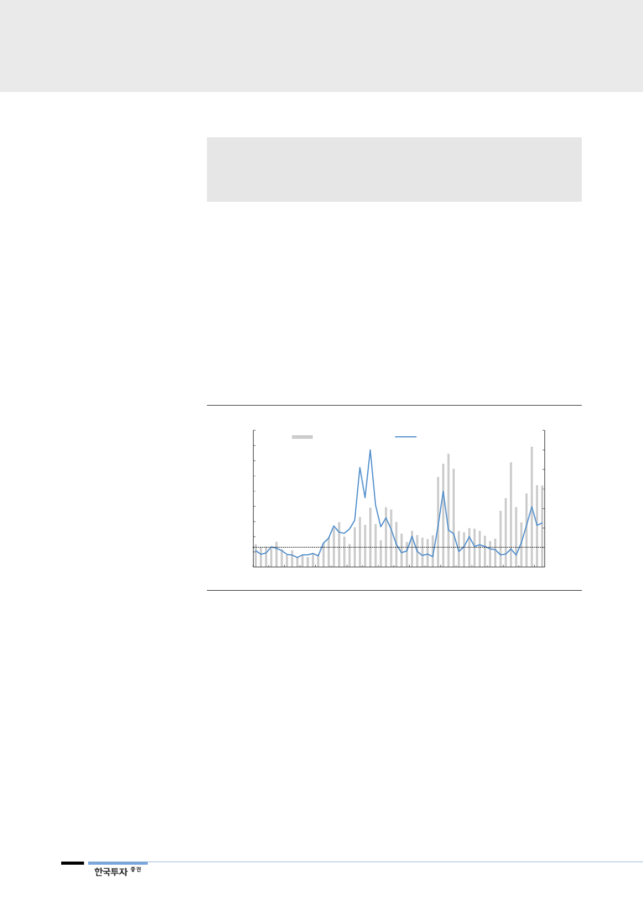

리포트 작성 목적
• 세계 신규 에틸렌 증설 전망
• 에텔렌 수급 및 스프레드 분석 및 전망
• 석유화학 시황 악화에 따른 롯데케미칼 실적 하향
I. 에틸렌 시황 악화
미국발 증설 영향으로
에틸렌 수급은 침체기 진입
에틸렌 스프레드 3년간
이어온 600~800달러/톤
하향 이탈
석유화학을 대표하는 에틸렌 스프레드는 3년간의 호황기를 뒤로하고 침체기에
접어들었다. 작년 4분기 미국의 대규모 신규 설비가 증설되었지만 허리케인 하비
의 영향으로 올해 1분기까지는 공급증가 영향이 제한적이었다. 그러나 2분기부터
에틸렌의 주요 유도품인 PE(polyethylene)를 중심으로 미국의 아시아향 수출량
이 폭발적으로 증가하기 시작했다.
[그림 1] 미국의 Asia향 PE 수출량 증가 추세는 지속될 전망
(톤)
90,000
80,000
70,000
60,000
50,000
Asia향 수출량(좌)
연간 증가율(우)
(%)
600
500
400
300
40,000
200
30,000
100
20,000
10,000
0
0
(100)
Jan-14 Jul-14 Jan-15 Jul-15 Jan-16 Jul-16 Jan-17 Jul-17 Jan-18 Jul-18
자료: 산업자료, 한국투자증권
또한 무역분쟁으로 인해 중국의 구매심리가 악화되며 3분기 계절적 성수기에 따
른 수요강세도 부재했다. 악재로 볼 수 있는 유가 급등과 공급증가는 하반기 더욱
거세졌다. 아시아 정기보수 시즌 마무리 후 재가동에 따른 물량증가가 에틸렌 수
급을 약세 전환시켰다. 이에 따라 최근 에틸렌 스프레드는 385달러/톤으로 상반
기 및 3분기 평균대비 각각 44%, 39% 축소되었다. 중요한 점은 아시아의 주력
에틸렌 생산 설비인 NCC(naphtha cracking center)의 스프레드 기준 손익분기
점은 200~250달러/톤이다. 아직까지 수익성이 높은 만큼 가동률을 낮추거나 증
설을 지연시킬 이유는 없다.
2